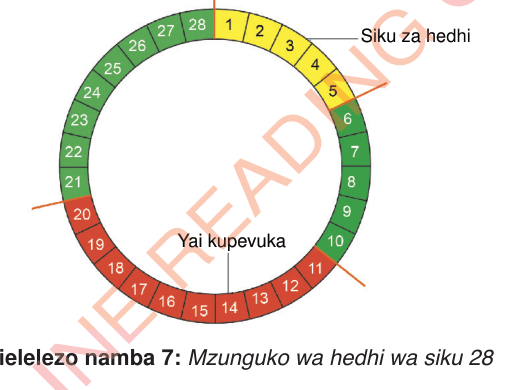

Mzunguko wa hedhi
Hedhi ni mchakato wa asili wa kibaiolojia wa utokaji wa damu iliyochanganyika na uteute kutoka kwenye ukuta wa uterasi kupitia uke. Hedhi ya mara ya kwanza ni moja ya ishara ya msingi ya kubalehe kwa msichana. Hedhi hutokana na kubomoka kwa utando na kuta za mji wa mimba, yaani uterasi. Kwa kawaida, hedhi hutokea mara moja kwa mwezi kama sehemu ya mzunguko wake ambapo yai moja au zaidi hupevuka.
Mzunguko wa hedhi ni kipindi kuanzia siku ya kwanza ya hedhi hadi siku moja kabla ya hedhi inayofuata. Kwa kawaida mzunguko wa hedhi ni siku 28 kama Kielelezo namba 7 kinavyoonesha. Hata hivyo, kuna wanawake wengine wana mzunguko wa kati ya siku 21 na 35.

Kielelezo namba 7: Mzunguko wa hedhi wa siku 28
Kuanza kwa hedhi kunaashiria kubomoka kwa ukuta wa uterasi ambao ulikuwa umejengeka kwa ajili ya kupokea zaigoti endapo yai lingerutubishwa. Muda wa hedhi hutofautiana kati ya mtu mmoja na mwingine. Kwa kawaida hedhi hudumu kati ya siku 3 hadi 5. Ingawa, baadhi ya wanawake wanaweza kuwa na hedhi fupi zaidi au ndefu hadi kufikia siku 7. Wakati wa hedhi vifaa maalumu vinavyoitwa pedi za kike au taulo za kike hutumika kufyonza damu inayokuja kupitia uke. Inashauriwa kutumia pedi za pamba. Pedi huvaliwa ndani ya chupi kwa kutumia vibandiko au vibawa maalumu. Inashauriwa kubadilisha pedi mara kwa mara, walau kila baada ya masaa matatu mpaka manne, ili kudumisha usafi na kuzuia matatizo yanayoweza kutokea kama vile harara au maambukizi.